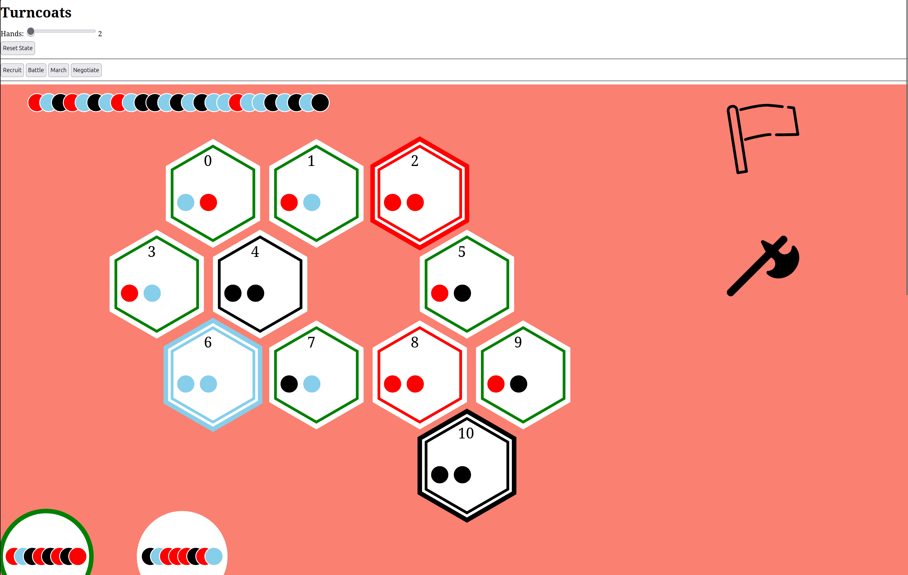
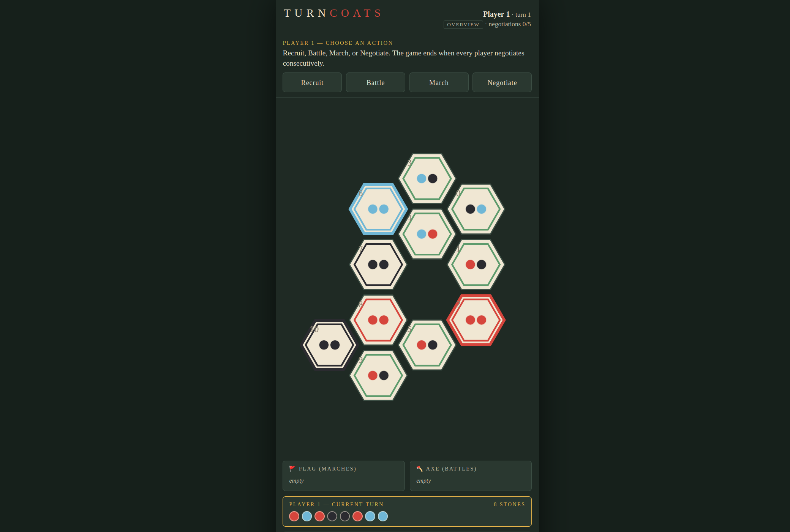

Project Turncoats
Turncoats is a board game about shifting alliances, hidden motives, and the delicate art of knowing exactly when to switch sides. Originally designed as a hand-crafted tabletop experience, it has since taken on a second life as a digital implementation — part passion project, part technical playground.
The original tabletop game was created by Milda Matilda Games — here's the source:

Milda Matilda Games
Turncoats
Turncoats is a competitive game for 2–5 players, where three factions are at war. The players take on the role of Aspirants and Interlopers, not obviously tied to any one group. Instead, they must manage their loyalties, represented by stones in their hand that they keep hidden from everyone else.
→ mildamatildagames.wordpress.com/turncoats-2[Template: Write a paragraph here about the game's core mechanics. What makes it tick? Is it a bluffing game, a strategy game, a negotiation game? Who is it for? What does a typical session feel like? Describe the moment-to-moment experience and the emotional arc of a match.]
[Template: Write a paragraph here about your personal connection to the project. Why did you build it? What itch did it scratch — was it a technical challenge, a design obsession, a tribute to the original? What did you learn along the way that you didn't expect?]
[Template: Write a paragraph here about the future of Turncoats. Where is it headed next? Are there features you still want to add, a community forming around it, a physical edition in the works? What would the "done" state look like — or is it the kind of project that's never really done?]


Timeline
[Template: Describe this milestone. What happened? Why was it significant? Add links, reflections, or technical notes as needed.]
[Template: Another milestone. Keep entries in reverse-chronological order if this is a changelog, or chronological if it tells a story.]
[Template: You can add as many entries as you like. The vertical line and accent markers will thread them together visually.]
[Template: Each entry can also include links — e.g. → GitHub commit or → blog post.]
[Template: Final entry. The timeline grows with the project.]